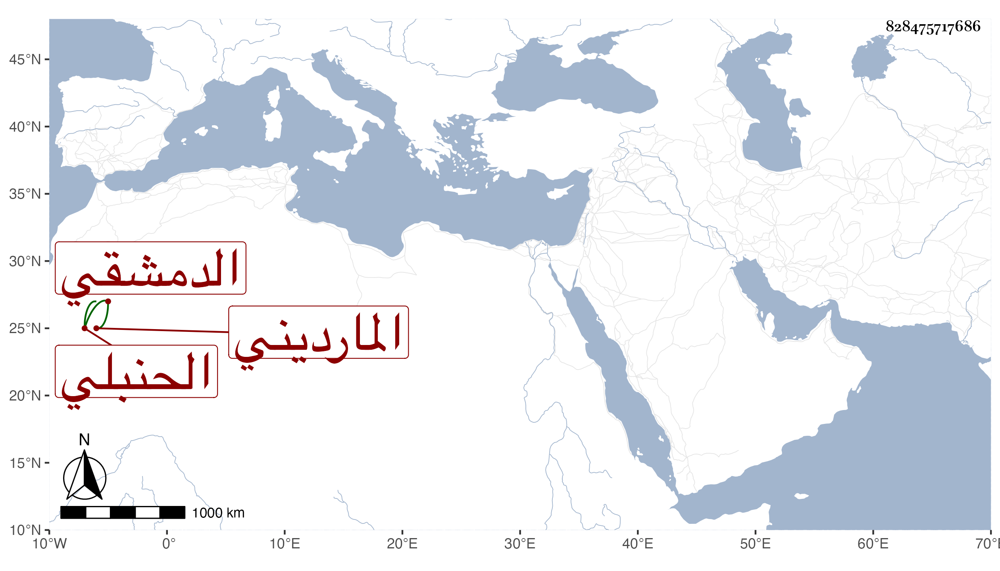

0902Sakhawi.DawLamic.ITO20230111-ara1.EIS1600.828475717686
Biography ID: 828475717686
744
أحمد الشهاب المارديني ثم الدمشقي الحنبلي ، كان حسن الشكالة والخط يتكسب بالشهادة كتب عنه البدري في مجموعة قوله :
| عزمت على حبي بسورة يونس | وكان نفورا كالظبا فتأنسا |
| ومال إلى نحوي وحق براءة | لقد نلت وصلا من عزيمة يونسا |
مات تقريبا بعد سنة أربع وستين .
